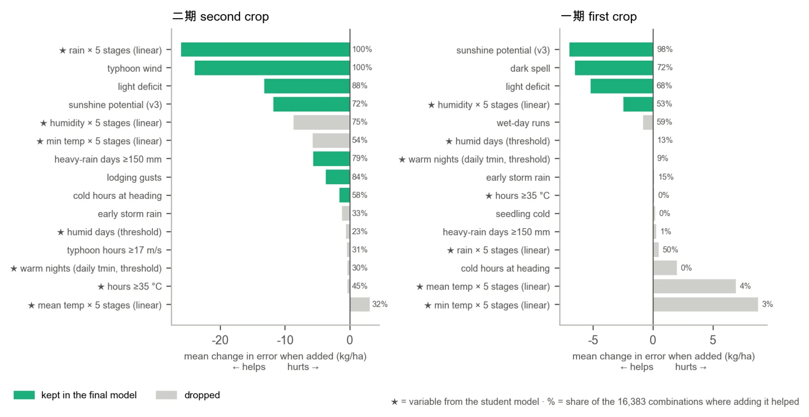
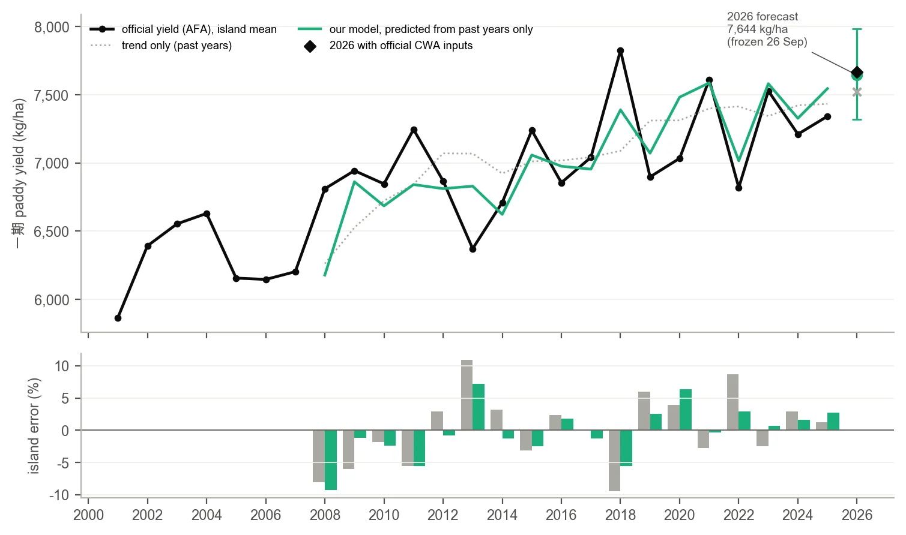
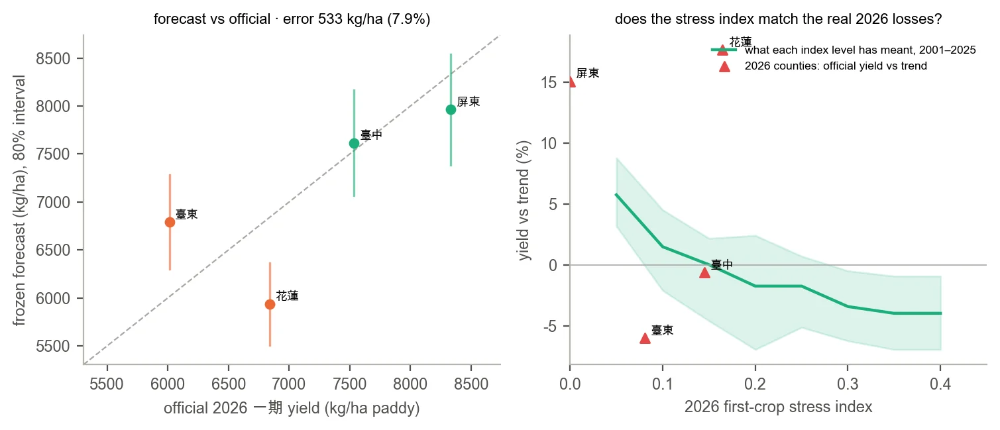
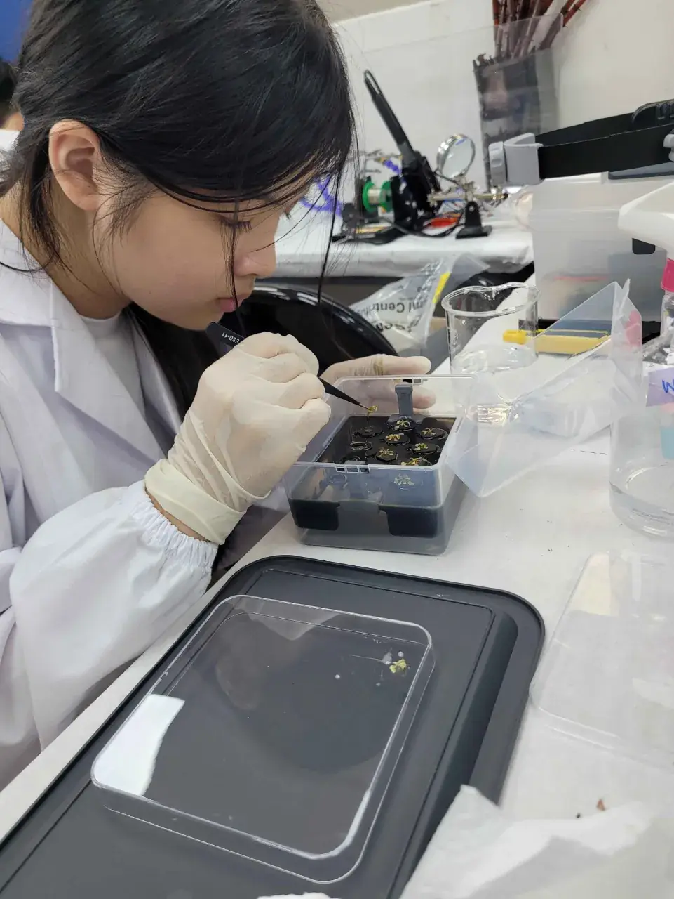
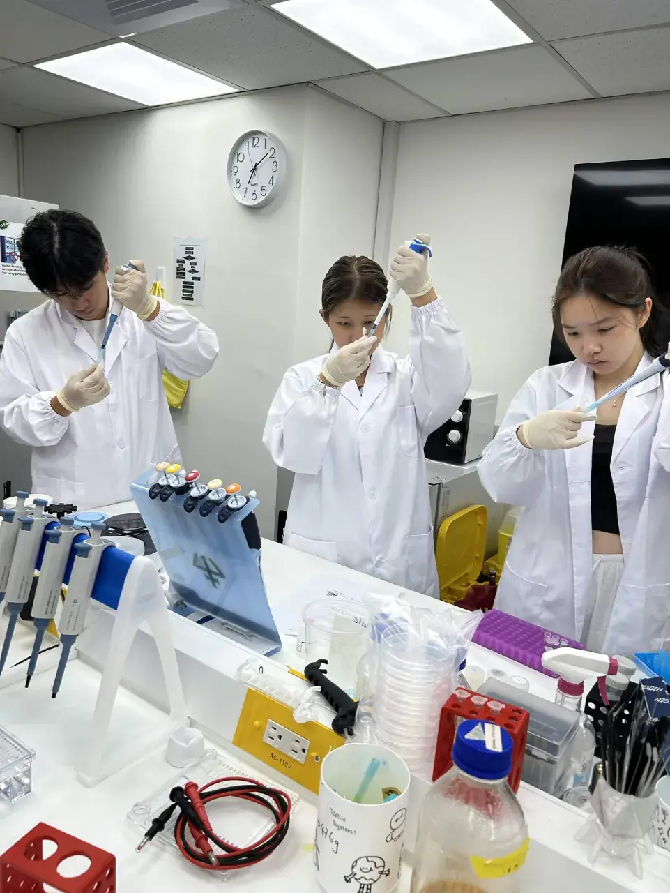
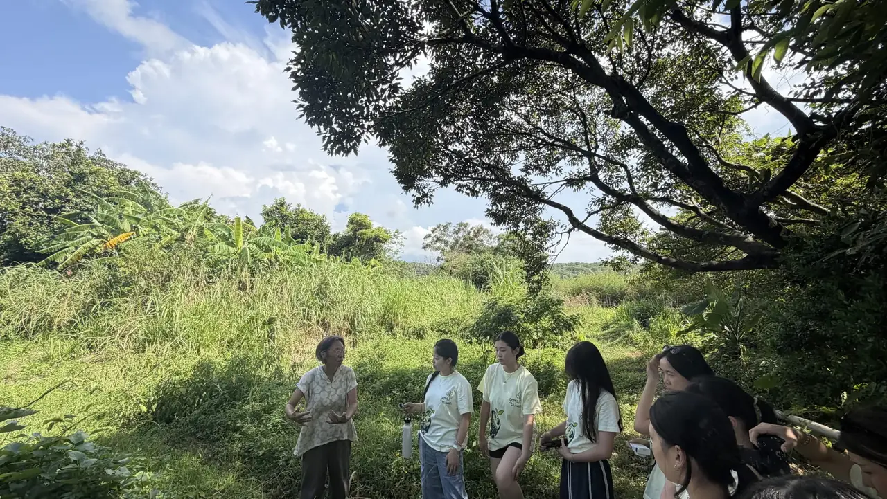

Timing constraints on delivery
ReLEAF's reactor makes a protectant (throughout this page the protectant is modelled from our wet lab data on one of the protectants we engineered and produced, ACC deaminase) only while its green lamp is on, so something has to decide when the lamp comes on, how bright, and for how long. For most of the year we treated that as a question about volume: how many litres does one hectare need. The answer kept moving, because it rests on a dose nobody has minimised and a canopy correction nobody has measured.
Time is the better question, because three independent intervals have to fit inside one window. A weather forecast sees about three days ahead. The reactor takes days to fill. The plant needs the protectant at one particular moment relative to the stress, and which moment is still contested at the bench.
They do not fit. One hectare's application takes 5.7 days on ten 20-litre units against a three-day forecast, so 2.7 days of production have to happen before any forecast exists to justify them. The reactor cannot chase the weather: it brews through the season and the forecast decides when to spend the stock, which makes the shelf life of what it makes the load-bearing number on this page. M2 gives that number a first value, and it is short. Everything else follows from the constraint.
Model inputs and their provenance
Fourteen inputs carry this model. Six are measurements of ours, four are public records, two are published constants, one is a figure from Geospatial Analysis, and one is neither measured nor cited — the canopy correction is a model, and the ledger in M4 shows where it enters and what it contaminates. The last column of each table says which is which, because the provenance of a number decides how hard a conclusion leaning on it can push.
Public record and literature
| Input | Source | What it sets | Provenance |
|---|---|---|---|
| County rice yields, every season since 2001 | Agriculture and Food Agency (農糧署) | Fits the stress index and scores it | public record |
| Daily weather, 2001 to 2025 | ERA5 reanalysis | The eighteen candidate stress terms | public record |
| Live forecast | Central Weather Administration (中央氣象署) | The three-day release decision | public record |
| Farm-gate paddy price, US$0.80/kg | Official 2026 farm-gate price | Turns an index level into money | public record |
| Unit cost, US$938 per 20-litre unit | Geospatial Analysis | Capital in the ledger | from GIS |
| CcaSR transfer function | Castillo-Hair et al. (2019) | The lamp setpoint; we have not tested it | literature |
| Enzyme kinetics, Km and kcat | Hontzeas et al. (2004) | Activity to protein mass | literature |
From our own bench
| Input | Source | What it sets | Provenance |
|---|---|---|---|
| Secreted activity, 7.25 mU mL⁻¹ | DNPH assay, 7 October 2026, n = 1 | Protectant per litre of culture | ours, below quantitation |
| Activity at 3 h and 6 h of induction | One tube at 3,850 lux, DNPH read at 28 h | The decay a banked stock has to survive | ours, n = 1 |
| Applied volume, 1.67 mL per three sprays | Experiment #9, phase 3 protocol | The dose, with the plate area | ours |
| Plate area, 78.5 cm² | 10 cm round plate, from the protocol | The dose, with the volume | ours |
| Timing arms, before / with / after | Three plant runs, two of them disagreeing | When the protectant must arrive | ours, contested |
| Reactor throughput, 34,807 mU L⁻¹ d⁻¹ | Titre over the batch cycle | Vessel litres per hectare | ours, derived |
| Rice canopy correction, ×2.44 | Leaf area index 4.5 against 0.115 on a plate | Plate rate to field rate | modelled, not measured |
Results
A stress index built from 25 years of harvests
Most crop stress indices weight temperature, water and light by expert judgement. We let Taiwan's harvests choose instead. Taiwan grows two rice crops a year in the same field: the first crop (一期) is transplanted around February and harvested in June, the second crop (二期) in July and November. They meet different weather, so they are fitted separately and an index value is never quoted without its crop.
A season whose yield fell below its county trend was a stressed season. For each crop we fitted all 215 − 1 = 32,767 combinations of fifteen candidate stresses and scored every one on years it had not seen. The second crop pays for wind, light and badly timed water; heat earns nothing once those are in, which is worth saying plainly because the wet lab has a heat programme this index does not support.


Against the no-weather trend the model carries 32% less county error in the second crop. The first crop is the weaker of the two fits and it is the one now being tested blind: the 2026 first-crop forecast was frozen on 26 September, before any county published, and four of sixteen counties are in at 7.9% county error against the trend's 8.8%. Four is too few to call. Hualien and Pingtung beat their index badly, Taitung undershot it, and only Taichung landed where history said. The second crop is not harvested until November, so the fit we trust most is the one no blind test has reached.

Induction at one setting, and an activity that falls
The reactor holds Bacillus subtilis WB800 carrying the cyanobacterial CcaSR system. Green light at 535 nm activates CcaS, CcaR~P drives PcpcG2, and the protectant gene behind a secretion signal puts active enzyme in the supernatant. The intensity that gives a wanted output comes from the Hill function Castillo-Hair et al. (2019) fitted in B. subtilis, inverted; both equations are in Key mathematical infrastructure. We take that curve as published. Nothing we have run tests it, because every induction so far has been at one setting.

What the induction actually showed
One tube was held at 3,850 lux of green and sampled twice, at three hours of induction and again at six. Activity did not accumulate between those samples. It fell, from 0.5503 mM of α-ketobutyrate to 0.1414, or 26% of the three-hour value. Read as first-order loss through two points, that is a half-life of 1.5 hours.
A second, independent reading says the same thing. The DNPH reaction on that sample ran 28 hours, and averaged over it the activity is 0.33 mU mL⁻¹, 22 times below the 7.25 mU mL⁻¹ an earlier supernatant assay reported over 30 minutes. Only 1.3% of the 43 mM substrate was consumed, so the reaction did not run out of substrate. A single decay with a time constant of 1.0 hours passes through both readings, which is a half-life of 0.7 hours and puts the initial rate at 9.2 mU mL⁻¹ — the same order as the earlier assay.
Two experiments, one in the culture and one in the assay tube, both put the lifetime of the secreted protectant at one to two hours. Neither is replicated and both sit near the assay's limits, so the number is provisional — but the direction is consistent, and it lands on the assumption Section 1 leans hardest on. A fleet that cannot chase a forecast has to bank stock, and stock with a ninety-minute half-life is not stock. The 18 October run should read the same plate at 0.5, 1, 2, 4 and 28 hours and sample the culture more than twice, which settles the initial rate and the decay together. If the decay holds, the next question is not how to make more protectant but how to stabilise what is made.
Three timing runs, two answers
Since July the plant team has run the same design: the protectant goes on one day before the salt, with it, or one day after. That design exists because the dry lab asked whether a farm needs a prediction at all. If pre-treatment wins, ReLEAF needs a forecast; if co-treatment wins, it needs a full tank and a fast response, which is a different machine. Three runs have reported and they disagree.


On agar at 75 mM, scored as fresh weight, pre-treatment wins. In soil at 300 mM, scored as chlorophyll per gram, co-treatment wins and pre-treatment does nothing; a commercial peptide at 100 mM also put co-treatment first. The soil run cannot settle it. Its five tubes held 22 to 199 mg of tissue, each weighed once, and chlorophyll per gram tracks that weight at r = −0.85; the group that looks rescued is the smallest of the five, and read as total chlorophyll the same tubes put co-treatment last.
An efficacy of 0.58, carried from Arabidopsis fresh weight on agar to rice grain yield, is withdrawn: the agar run reaches the ceiling of the calculation it came from and the soil run cannot be read, so neither bounds it. M5 draws the payback against efficacy on an axis instead.
One plate to one hectare to capital
Everything above arrives here as one chain. A recorded volume over a known plate area is a rate, and a rate scales to a hectare with no modelling in between; earlier drafts used 100 cm² because the plate size had never been written down, and the protocol gives 10 cm round plates, so the rate is 27% higher than we were carrying. From there the titre turns litres into protectant, the weather record turns one application into a season, and the reactor's own throughput turns a season into vessels and money.
Two rows carry their caveat with them. The canopy correction is modelled from a leaf area index of 4.5 against 0.115 on a seedling plate and spans 1.68 to 3.52, so the 5,188 L is a working scenario and not a validated rice dose. And the experiment that produced 1.67 mL changed salt level and timing but never the amount, so 2,126 L/ha is a dose that worked rather than the smallest that works. One plate with neat, 1:3, 1:10 and 1:30 arms would find the minimum, and every row below it would move.
Payback against efficacy, and an idle fleet
Ten units cost US$9,375. Our stress index says the weather this protectant acts on costs an ordinary Yunlin (雲林) paddy US$138 per hectare per crop, and only the second crop ever crosses the release threshold, so one crop a year earns anything back. Efficacy is the share of that loss the protectant recovers; no run of ours bounds it, so the payback is drawn across the whole axis.
Nothing on that axis works. At perfect efficacy the capital takes 68 years, and five years would need an efficacy of 14 — more than the loss itself. Geospatial Analysis reaches a different figure from its own chlorophyll work, a net benefit of US$1,931 per hectare per crop that pays back in 4.9 years, and that is 14 times the entire loss our index can attribute to weather. Both cannot be right. Section 4 sets out what would settle it.
The second problem is that the machine stands still. Only the second crop fires, and within it 17 of 25 seasons never cross the threshold. A firing season needs 9 passes at 5.4 days each, or 49 reactor-days inside a crop of about 120 days, so one ten-unit fleet covers 2.5 hectares and brews on 4.3% of the calendar.
That makes the payback partly a question about ownership. One fleet shared across the 2.5 hectares it can serve divides the capital that many ways: 27 years on our own loss figure at perfect efficacy, still not a business, and 2.0 years on the Geospatial Analysis figure. Whichever benefit is right, a reactor bought by a single farm spends almost all of its life doing nothing.
Connecting lab and field with numbers
Every number in the ledger that is not arithmetic came off a bench in this team. The plate area and the applied volume are the plant team's protocol, the titre and the light-plate wells are the measurement team's assays, and the throughput is the reactor team's batch cycle. The model's job is to carry them out of the laboratory in a form two other pages can use.


The business team asked for three numbers in a row: how much protectant a hectare of ordinary rice farmland needs, how far that is from what the current reactor can make, and what closing the gap costs. The ledger was built to end on exactly those, and all three carry the canopy correction, so they are scenario figures rather than quotes.
| The question | The answer this model gives | Where in the model |
|---|---|---|
| How much protectant does one hectare need? | 37.6 kU per application and 339 kU in a season that fires, which at our secreted protein concentration is about 10 g and 92 g of enzyme | M4, the protectant group |
| How far is that from what we can make now? | One hectare needs 81 L of vessel running all season. The current spec is 10 × 20 L = 200 L, which covers 2.5 ha — about one Taiwanese farm. A 100-hectare association needs 8,106 L, a 41× scale-up | M4, the machine group, and M5 |
| What does that cost? | US$3,800 of capital per hectare at US$938 per 20-litre unit, before any refill, service or labour. For 100 hectares, US$379,992 | M4, the result line |
Geospatial Analysis answers a question that looks the same and is not. It derives units per hectare from soil, because how far and how long the protectant stays where it is put depends on soil class; this page derives units per hectare from reactor throughput, because a fleet that cannot brew fast enough is short whatever the soil does. A deployment has to satisfy both and the binding one will differ by township, so the two densities need reconciling before either is quoted as the number of machines a field needs.
The two pages also disagree, and the gap is large enough to matter. Our stress index can attribute US$138 per hectare per crop to the weather this protectant acts on. Geospatial Analysis, working from its own chlorophyll measurements and a published rice loss curve, puts the net benefit of protecting a moderately stressed hectare at US$1,931 per crop. That is 14 times larger than the whole loss our index can find, so either the index is blind to most of what stress costs a field, or the chlorophyll-to-yield step is too generous. Three things would settle it: a yield endpoint rather than a chlorophyll one, the same stress definition on both pages, and agreement on whether a protected hectare earns once or twice a year. Until then this page quotes its own figure and marks where the other one lands.
Where the two pages already agree is ownership, and they reached it from opposite directions. Geospatial Analysis puts capital per hectare at or above a full year of gross paddy revenue in every soil class and notes that 99% of Taiwanese farmers work under two hectares, so individual ownership is arithmetically out of reach. This page gets there from the duty cycle: a ten-unit fleet brews on 4.3% of the calendar and covers 2.5 hectares, so a machine bought by one farm is idle almost all of its life. A shared asset held by a farmers' association is not a preference in either account; it is the only structure the arithmetic allows. The two costs this page does not carry are the ones a farmer actually pays — refill cartridge cost and hardware service life — and the straw-return mechanism in the business plan is the lever on the first.
Conclusion
The model set out to size a dose and ended up sizing a machine. Taiwan's own harvests supply a stress index that beats the no-weather trend by 32% in the second crop and is now carrying a frozen 2026 forecast into the open. From there the chain is arithmetic: 37.6 kU of protectant on a hectare, 81 litres of vessel to make it in a season, US$3,800 of capital to buy them.
Two results argue against the machine as it stands. It needs 5.7 days to serve one hectare against a three-day forecast, so it has to brew on stock rather than on a forecast; and it covers 2.5 hectares while brewing on 4.3% of the calendar, which puts individual ownership out of reach for the farm size 99% of Taiwanese farmers work. That is the same conclusion Geospatial Analysis reached from soil and revenue instead of throughput.
Two results are unresolved and we are not hiding either. The protectant we secrete loses activity with a half-life of about 1.5 hours in the culture, and an independent reading of the same sample in the assay tube agrees on the order; a system that has to bank stock cannot bank something that short-lived. And the benefit a protected hectare earns is in dispute by a factor of 14 between this page and Geospatial Analysis. Neither gap is closed by more modelling; both are closed at a bench, and Current limits says with what.
Key mathematical infrastructure
Six relations carry the whole page. Two are the optogenetic transfer function and its inversion, two turn an assay reading into enzyme, and two turn enzyme into hardware and money. Each is cited where it is not ours.
Steady-state output of PcpcG2 under CcaSR as a fraction of saturation, against green photon flux I. For B. subtilis, K1/2 = 4.66 ± 0.63 µmol m⁻² s⁻¹ and n = 1.88 ± 0.16 (Castillo-Hair et al., 2019). Used as published; every induction we have run was at one intensity, so we have not tested it.
Equation 1 inverted: the lamp setpoint that delivers a demand f from M1. The lamp ceiling of 20 µmol m⁻² s⁻¹ reaches 0.94 of maximum on this curve.
Michaelis–Menten, used to correct the DNPH reading to Vmax. At 43.0 mM substrate against Km = 3.4 mM the assay runs at 93% of Vmax (Hontzeas et al., 2004).
Active-site concentration from corrected activity, with kcat = 146 min⁻¹ for Pseudomonas putida UW4 (Hontzeas et al., 2004). At our titre this is 54 nM of sites, or 1.96 mg L⁻¹ of protein.
Litres of culture per hectare, from the volume applied over a known plate area scaled to 10⁸ cm², times the canopy correction C = 2.44. C is the only modelled term in the ledger and spans 1.68 to 3.52.
Vessel litres a hectare needs, from the dose, the passes a firing season takes, the reactor's output R in culture-litres per vessel-litre per day and the length of the crop; and the payback that capital K reaches at efficacy ε against an addressable loss L. Both are ours.
Current limits
Six things this model cannot yet do. Efficacy is unbounded: no plant run of ours constrains how much of a salinity loss the protectant takes back, so every figure in dollars is drawn against efficacy rather than at a value. The dose is one that worked, not the smallest that works, and no dilution series has been run. The canopy correction is modelled and spans 1.68 to 3.52, and every row of the ledger below it inherits that. The titre rests on one well below the assay's quantitation limit, and the 28-hour endpoint that would check it cannot be told from a stalled reaction. Shelf life now has a first value, a half-life of about 1.5 hours from a single unreplicated pair, and the whole banked-stock plan depends on whether it survives replication and on whether a concentrated, cooled or formulated preparation holds longer. The release rule is counted from waterlogging while the payback is priced on salinity; making them agree means rebuilding the rule around salt-sensitive growth stages, which would need roughly fifteen applications in a 30-day window instead of nine, or 81 reactor-days inside 30, which the current fleet could not serve for even one hectare without banking well in advance.
References
Measurements made by this team are documented on Measurement, Plants and Notebook, and are cited in the tables above rather than listed here. Published sources follow APA 7.
- Agriculture and Food Agency, Ministry of Agriculture. (2026). Rice production statistics by county and crop season, 2001–2026 [Data set]. Republic of China (Taiwan).
- Arnon, D. I. (1949). Copper enzymes in isolated chloroplasts. Polyphenoloxidase in Beta vulgaris. Plant Physiology, 24(1), 1–15. https://doi.org/10.1104/pp.24.1.1
- Castillo-Hair, S. M., Baerman, E. A., Fujita, M., Igoshin, O. A., & Tabor, J. J. (2019). Optogenetic control of Bacillus subtilis gene expression. Nature Communications, 10, 3099. https://doi.org/10.1038/s41467-019-10906-6
- Central Weather Administration. (2026). Station observations and short-range forecasts [Data set]. Republic of China (Taiwan).
- Hersbach, H., Bell, B., Berrisford, P., Hirahara, S., Horányi, A., Muñoz-Sabater, J., Nicolas, J., Peubey, C., Radu, R., Schepers, D., Simmons, A., Soci, C., Abdalla, S., Abellan, X., Balsamo, G., Bechtold, P., Biavati, G., Bidlot, J., Bonavita, M., … Thépaut, J.-N. (2020). The ERA5 global reanalysis. Quarterly Journal of the Royal Meteorological Society, 146(730), 1999–2049. https://doi.org/10.1002/qj.3803
- Hontzeas, N., Zoidakis, J., Glick, B. R., & Abu-Omar, M. M. (2004). Expression and characterization of 1-aminocyclopropane-1-carboxylate deaminase from the rhizobacterium Pseudomonas putida UW4: A key enzyme in bacterial plant growth promotion. Biochimica et Biophysica Acta (BBA) — Proteins and Proteomics, 1703(1), 11–19. https://doi.org/10.1016/j.bbapap.2004.09.015